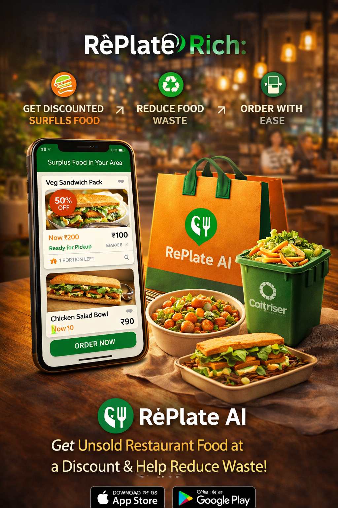

Daily surplus is unavoidable
Cafes, bakeries, and QSRs routinely produce extra inventory to maintain availability through peak hours.
RePlate AI helps restaurants, cafes, and bakeries predict unsold food, auto-discount it, and sell it to nearby users instead of throwing it away.

Businesses overprepare to avoid stockouts. By evening, perfectly edible food often becomes dead inventory.
Cafes, bakeries, and QSRs routinely produce extra inventory to maintain availability through peak hours.
Unsold food locks in ingredient cost, labor cost, and missed revenue, then often adds disposal cost on top.
Students and young professionals are highly open to quality meals at a discount if discovery and pickup are simple.
RePlate AI helps merchants forecast surplus before closing, apply smart markdowns, and sell nearby through a frictionless pickup experience.
Forecast leftover inventory using time of day, sales trends, and outlet-level patterns.
Convert unsold meals into time-sensitive offers that preserve margin while increasing sell-through.
Surface discounted meals to users close enough to act quickly before closing time.
Food inflation, labor cost pressure, and thinner operating margins make waste reduction an economic priority.
Urban users already rely on app-led hyperlocal discovery, and price-sensitive segments are primed for quality discounts.
Businesses increasingly need measurable, credible sustainability action rather than only brand messaging.
Neighborhood density in Bengaluru makes fast pickup and time-sensitive inventory matching much more workable.
Subscription for surplus analytics, outlet dashboards, demand insights, and markdown automation.
Commission on each successful surplus meal order placed through the marketplace.
CRM, WhatsApp reactivation, loyalty integrations, and performance benchmarking for higher-value accounts.
Focus first on Bengaluru neighborhoods with high food outlet density and digitally active consumers.
Launch in Indiranagar, Koramangala, HSR, and Whitefield with bakeries, cafes, cloud kitchens, and QSRs.
Extend to Hyderabad, Pune, and Mumbai with repeatable merchant onboarding and neighborhood-led growth.
Add enterprise chains, campuses, and large-format food operators to deepen supply density and data advantage.
These are illustrative pilot targets, not actual traction.
A product that combines margin recovery, consumer value, and measurable waste reduction can become a strong urban commerce platform.